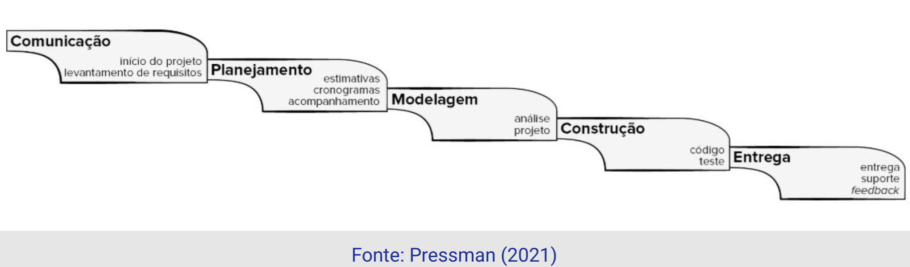
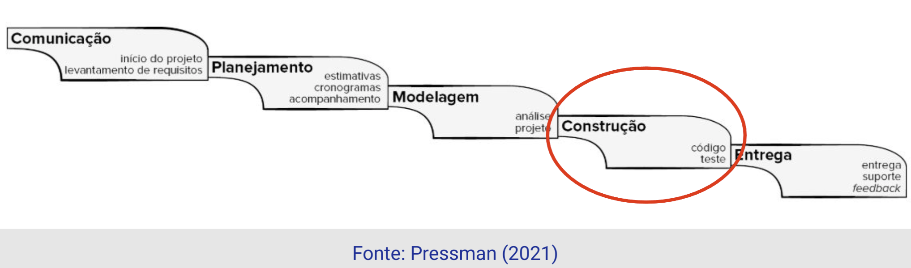
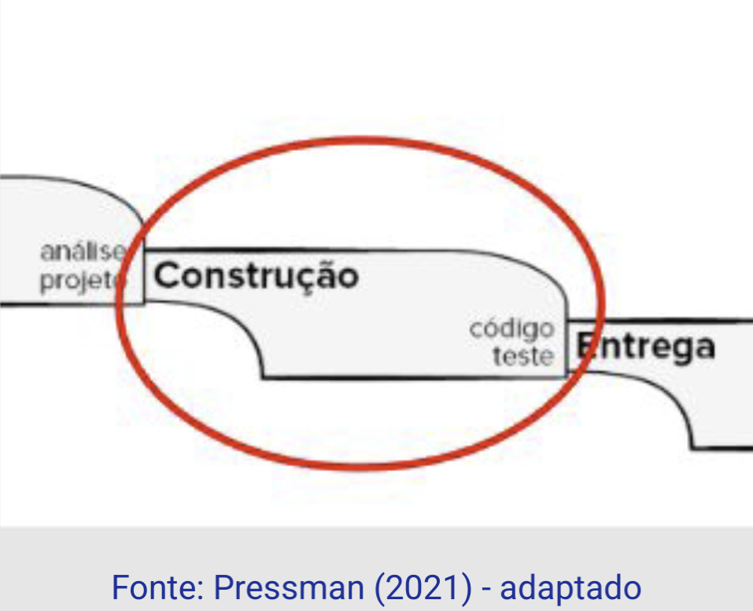
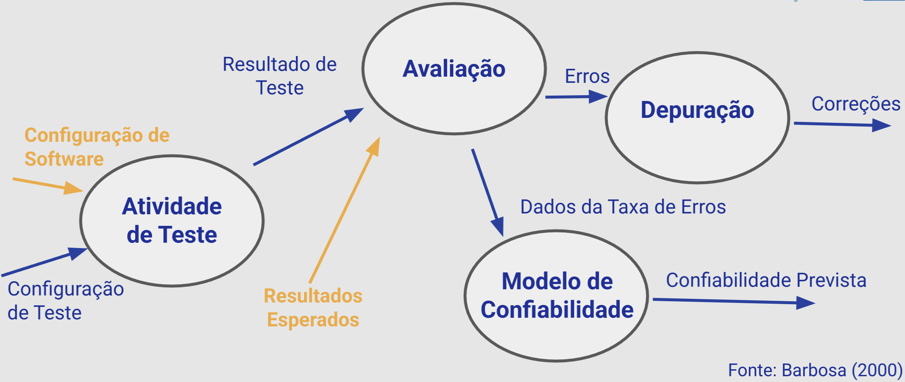
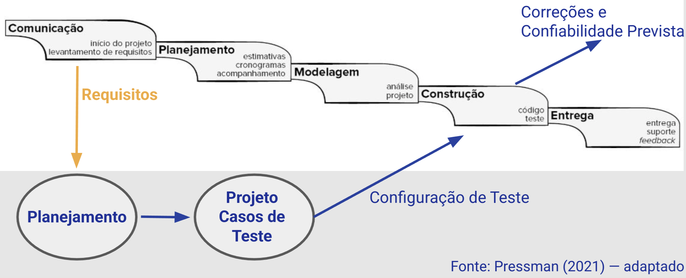
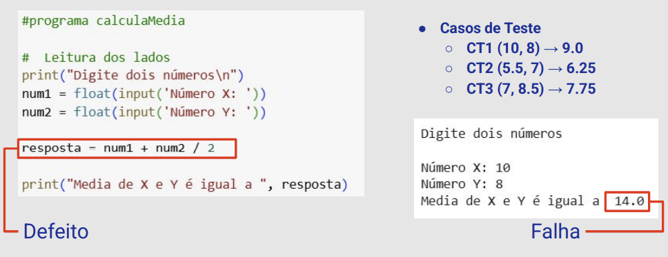

Disciplinas
VERIFICAÇÃO, VALIDAÇÃO E TESTE DE SOFTWARE. Concluído
Materiais
[UFMS Digital] VERIFICAÇÃO, VALIDAÇÃO E TESTE DE SOFTWARE - Módulo 1 - Unidade 2
Prof° ministrante: Leonardo Souza Silva.
Em nossa última aula...
Qualidade de Software significa conformidade com requisitos funcionais e de desempenho, padrões de desenvolvimento documentados e características implícitas esperadas de todo software profissionalmente produzido.
Problemas com software
...

...
Existe vida sem software?
...
Engenharia de Software.
- Conjunto de princípios, métodos e técnicas.
- Objetivo → Produzir software de alta qualidade.

...
Garantia da Qualidade de Software.
Atividades aplicadas durante o processo de desenvolvimento visando níveis especificados de qualidade:
- Atividades de Validação;
- Atividades de Verificação, e
- Atividades de Teste de Software
- Assegurar que o produto final corresponda aos requisitos.
- (Estamos construindo o produto certo?)
- Assegurar consistência, completitude e corretitude do produto em cada fase e entre fases do desenvolvimento.
- (Estamos construindo corretamente o produto?)
Examina o comportamento do produto por meio da sua execução
- O software nasce de um conceito abstrato;
- Devem ser conduzidos de maneira sistemática (repetibilidade);
- Por vezes é visto como algo negativo, destrutivo.
- Análise, Projeto e Codificação → tarefas construtivas;
- Teste → algo destrutivo.
Grupo Independente de Teste.
- Surge de uma percepção errônea de um conflito de interesses entre desenvolvedores e testadores.
- Outras interpretações errôneas:
- De modo algum o desenvolvedor deverá testar;
- Software será testado impiedosamente por estranhos;
- O time de teste só se envolverá quando a fase de teste estiver prestes a se iniciar.
- A visão de uma pessoa externa, não envolvida no desenvolvimento, traz isenção e um novo olhar ao projeto.
- Pode ser outro desenvolvedor do time ou uma equipe dedicada para este fim, a depender da organização da empresa
Em que momento começa a atividade de Teste de Software?
Fase de Teste de Software
...
Mas...Em que momento começa?
Teste de Software
Processo de executar um programa com a intenção de encontrar erros.
- Um bom caso de teste é aquele com alta probabilidade de encontrar um erro ainda não conhecido;
- Especificação de uma entrada para o programa e a correspondente saída esperada;
- Um teste bem-sucedido é aquele que descobre erros que ainda não haviam sido revelados.
- Devem ser rastreáveis até os requisitos do cliente;
- Orienta se a saída esperada é correta ou não;
- Princípio de Pareto se aplica ao Teste de Software (80/20);
- Teste deve começar da menor parte e progressivamente se encaminhar para a maior parte;
- Teste exaustivo não é possível

...

...

...
Teste de Software — Terminologia
- DEFEITO
- Deficiência mecânica ou algorítmica que se ativada leva a uma falha.
- ERRO
- Item de informação ou estado de execução inconsistente.
- FALHA
- Evento notável no qual o sistema viola suas especificações.
- TESTE
- Processo de executar um programa visando revelar a presença de defeitos. Aumentar a confiabilidade sobre o programa.
- DEPURAÇÃO
- Consequência não previsível do Teste. Uma vez revelada a presença de um defeito, ele deve ser encontrado e corrigido.
Vamos praticar...
Uma rotina deve receber dois números reais, positivos, e calcular a média aritmética entre eles (requisito).
Casos de Teste
CT1 (10, 8) → 9.0
CT2 (5.5, 7) → 6.25
CT3 (7, 8.5) → 7.75
#programa calculaMedia
# Leitura dos lados
print("Digite dois números\n")
num1 = float(input('Número X: '))
num2 = float(input('Número Y: '))
resposta = num1 + num2 / 2
print("Media de Xe Y é igual a", resposta)
Casos de Teste
CT1 (10,8) → 9.0
CT2 (5.5, 7) → 6.25
CT3 (7, 8.5)→7.75
Digite dois números
Número X: 10
Número Y: 8
Media de X e Yé igual a 14.0
Digite dois números
Número X: 5.5
Número Y: 7 Media de Xe Yé igual a 9.0
Digite dois números
Número X: 7
Número Y: 8.5 Media de Xe Yé igual a 11.25

...
- ERRO
- Item de informação ou estado de execução inconsistente.
Verificação e Validação (V&V)
- E se não tivéssemos o código da rotina?
- Ainda seria possível revelar a presença daquele defeito?
- Existem técnicas que não dependem da execução do código;
- Complementares a atividade de Teste de Software;
- Atividades de Verificação e Validação.
Nesta aula
- Conhecemos as atividades de Garantia da Qualidade;
- Verificação, Validação e Teste de Software;
- Conhecemos o que é a atividade de Teste e sua terminologia;
- Caso de Teste;
- Entendemos como a fase de Teste de Software se relaciona com o processo de desenvolvimento de software